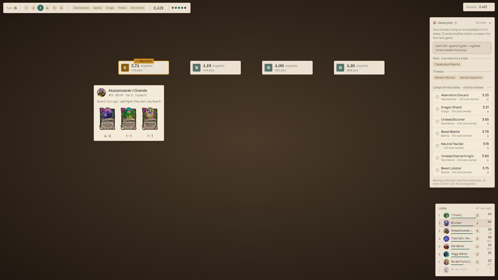
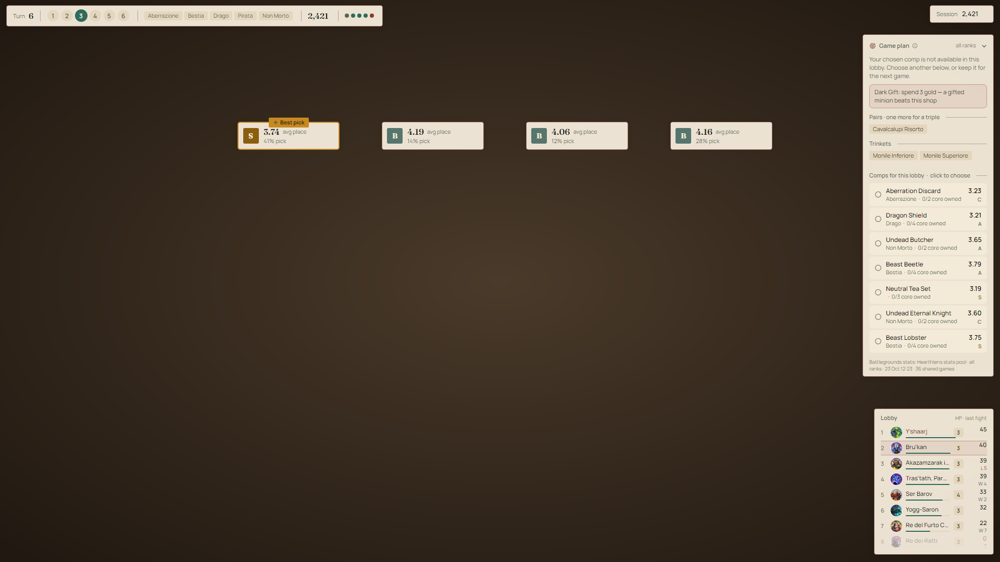
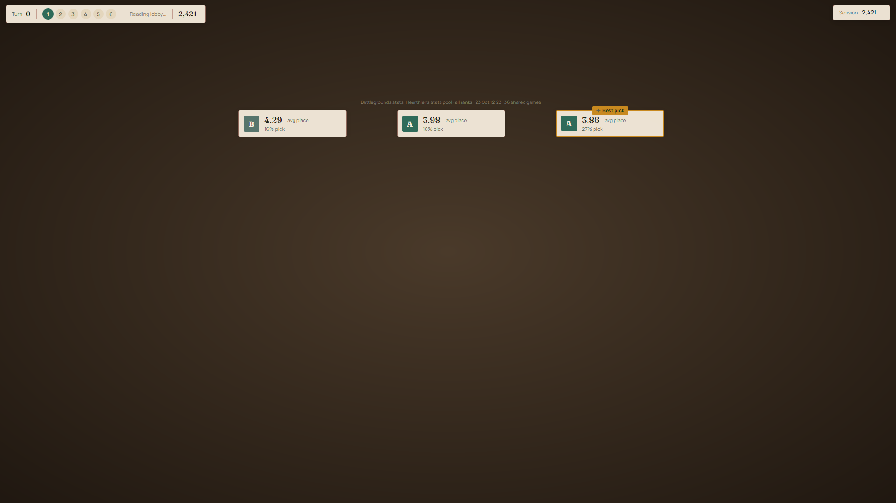
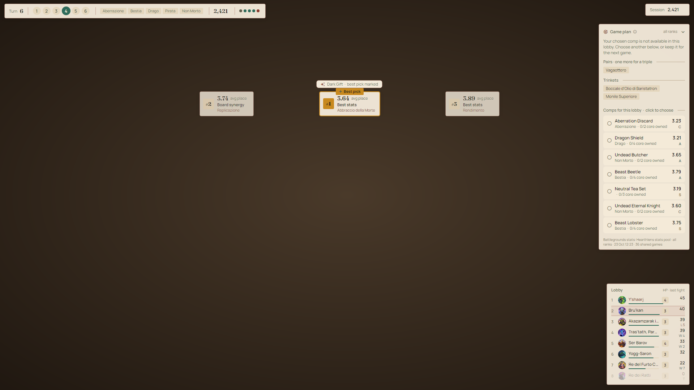
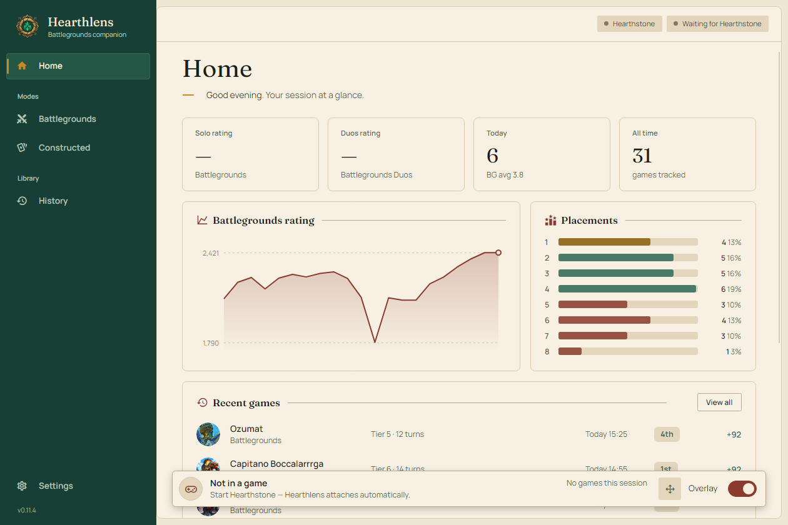
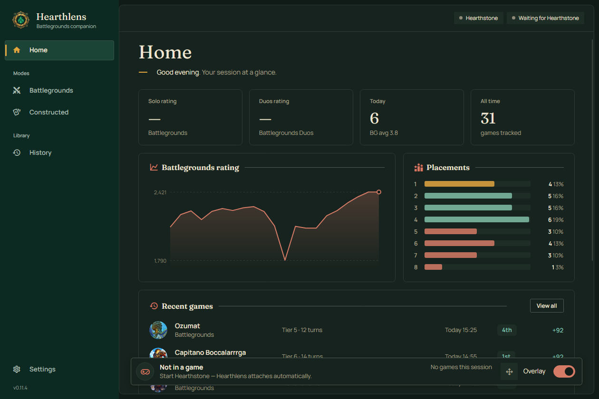
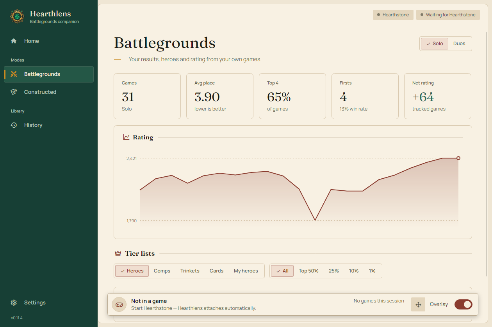
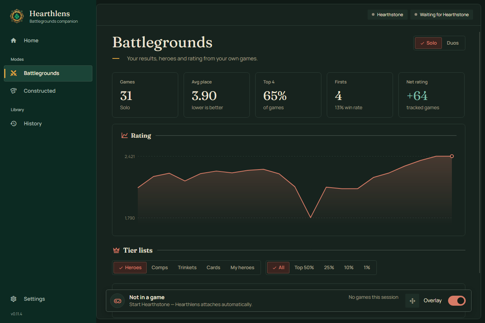

Hover to read
Tier 6 text is tiny in game. Hover a card in the overlay and it grows to full size.
Hearthlens sits at the edge of your Battlegrounds screen and tells you what it thinks: which hero suits this lobby, what's worth buying, which comp you're closest to, and how the next fight will probably go. You still make every click.

The notes stay at the edges, off the board. You never have to click them.
Each panel shows up when its question does: heroes at the start, scores while you shop, rankings when a Discover opens. Then it gets out of the way.



Up to seven comps that work in this lobby, sorted by how they place and how many core cards you already have. Each one tells you when to commit. Click one to lock it in, or let Hearthlens follow your board.
The tribes are known before your first buy, so every hero's numbers are adjusted for the lobby you're actually in. Want a nudge? Turn on Mark the best. Rather decide yourself? Stats only is the default and marks nothing.
Every minion and tavern spell in the shop gets a score based on your board, your comp and the gold in your pocket. Triples, core cards and freezes worth making are called out before you spend.
Discovers, Dark Gifts and trinkets are ranked. When two options are within noise of each other, Hearthlens says so instead of pretending one is clearly better.
There's nothing to set up between rounds. Hearthlens reads the game as it goes and keeps its advice pointing the same way.
The lobby's tribes are known, and the hero scores shift to match them.
Comps you could build appear with their core cards. The list moves as your board does.
Minions, spells, triples and freezes are scored against the same plan, so turn 5 doesn't argue with turn 9.
The simulator plays out the next combat and keeps everyone's last board in view.
Win, tie and loss chances come from simulating the real fight, effects included. They stay on screen for the whole combat.
If a minion's effect isn't simulated yet, the overlay tells you. It won't quietly get it wrong.
The parts you only notice after a few evenings with it on.
Tier 6 text is tiny in game. Hover a card in the overlay and it grows to full size.
Drag every panel into place, scroll over one to resize it, right-click to reset. Ctrl+Shift+L on Windows.
Need a clean screen for a clip or a stream? Ctrl+Shift+H hides everything Hearthlens draws.
Out of the box it shows the numbers and marks nothing as the best pick. Turn on Mark the best if you'd like a nudge.
It checks for a new version every six hours and installs it when you close the app, never mid-game. You can switch this off in Settings.
Stats are split by Solo and Duos, and by rating bracket, from everyone down to the top 1%.
The site, the app and the overlay share the same paper and ink. The app keeps your history, tier lists and settings. It also tracks Constructed, with win rates and matchups for every deck you play.


Every game you play is saved to a small SQLite file on your own computer. There's no account to make and nothing to sync, and your history still opens when you're offline.


Hearthlens starts from a baseline snapshot, so the advice is useful from your very first game. Players who opt in share their games, and every six hours those are blended in, weighted by sample size. Nothing is thrown away; the mix shifts as more people play.
Pool updated 23 Oct, 09:10 UTC · shared games in this window: 0
Card data and art: HearthstoneJSON. Shared games carry no player identity.
Hearthlens reads the game. It doesn't play it. Here's exactly where the line is.
No clicks, no buys, no moves. It reads the logs and draws notes on top. Every decision is yours.
Nothing is written to Hearthstone. On Windows it reads a few values from memory, like your rating, and only reads them.
You see what the game already shows you, organised. Nothing about other players' hands or future shops.
Sharing stays off until you say yes. Shared games carry no name, BattleTag or account.
Setup takes one restart. After that, Hearthlens starts when it's needed and stays quiet when it isn't.
Grab the build for your system below. No sign-up, no account, no key.
Hearthlens turns on the game's logging the first time it runs, and Hearthstone only reads that setting when it starts.
Start a Battlegrounds game. The overlay attaches by itself when the match begins.
Free for Windows, macOS and Linux. Install it, restart Hearthstone once, and your next lobby gets a second opinion.
Download for WindowsVersion 0.12.2. Release notes and checksums.
Pick your system.
Something missing? Ask on GitHub.
No. It reads the logs, scores your options and draws notes over the game. It never clicks, buys or changes anything.
Hearthlens doesn't modify Hearthstone or automate play. It reads the log files the game already writes. Any third-party tool carries some risk, and Hearthlens is built to stay firmly on the read-only side.
First, make sure you restarted Hearthstone once after installing. On Windows, set the game to Windowed (Fullscreen) in Options, Graphics, since true fullscreen blocks every overlay. If you hid it, Ctrl+Shift+H brings it back.
Yes. Stats are kept separately for Solo and Duos, and you can switch between them in the app.
Yes. It checks for a new version every six hours and installs it the next time you close the app, so a game in progress is never interrupted. Your history, settings and overlay layout stay as they are. The portable builds tell you about updates but don't install them.
Yes. There are native builds for Windows, for macOS on both Apple silicon and Intel, and for Linux as deb, rpm, AppImage and tar.gz.
Nothing, unless you opt in. If you do: anonymous game rows such as your hero, placement, the lobby's tribes, your final board, trinkets, tier-ups, fights, picks and plays. Never your name, BattleTag, account or anything about other players.
On your computer: %APPDATA%\Hearthlens on Windows, ~/Library/Application Support/Hearthlens on macOS and ~/.local/share/Hearthlens on Linux. Portable builds keep everything in a folder next to the app.
Hearthlens switches on the game's logging the first time it runs, and Hearthstone only reads that setting when it starts.
Not yet. iOS doesn't let another app read Hearthstone or draw over it. On Android 11 and later, reading the game's logs needs extra setup.
A baseline snapshot, blended with games that players choose to share and weighted by sample size. The app shows how many shared games went into the current numbers.